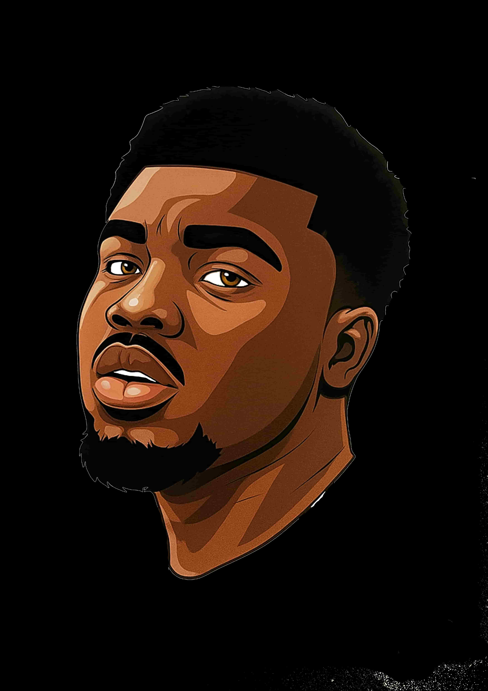

WWR Adventures brings thrills and safe, high-energy white water experiences to paddlers of every skill level. Our guides are certified, our equipment is rigorously maintained, and our mission is to create lifelong memories while respecting the river and local environment.